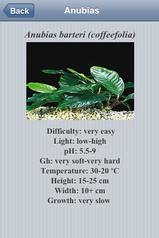
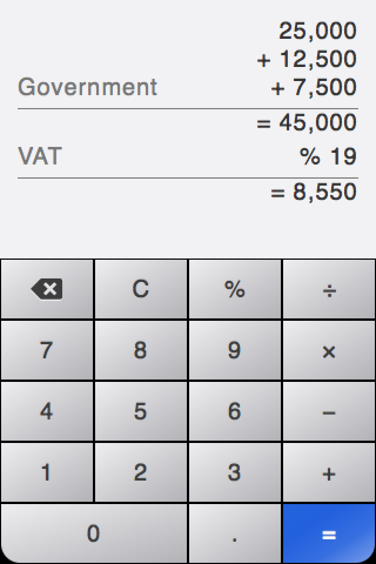
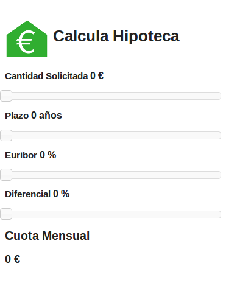

我們過去一年來不斷招募開發者。這些開發者均已於不同的 Open Web 與 HTML5 平台上開發過 App，如以 PhoneGap wrapper 建構的原生 App；針對 Amazon、Blackberry、Chrome、Microsoft、WebOS，甚至手寫的原生程式碼 wrapper 而建構的 HTML5 App；用 Emscripten 編譯過的 C++ 等等。我們已於全球寄出多款裝置而支援了數百名開發者，以利大家測試並展示 Firefox App。
如果你本身擁有成功且高評價的 HTML5 App (任何平台均可)，Mozilla 熱切希望你能將之移植到 Firefox OS 之上。我們保證不會佔用你太多時間而且絕對值得。今年十一月，Firefox OS 已於希臘、匈牙利、塞爾維亞、蒙特內哥羅等國現身，本月稍早亦於義大利發表。在 2014 年，Mozilla 另將與新合作的電信營運商發表新語系的 Firefox OS，也會有新規格的新款裝置。我們預期會出現更強大的跨平台工具，對 PhoneGap 與 Firefox 開發者工具的整合度也更高。現在正是你跨則搶占先機的最好時間點。
現來看看 Mozilla 注意到的幾個 App 成功移植案例。這幾位技巧嫻熟的 HTML5 App 開發者均參加過 App 移植專案與相關工作坊 (需受邀才能參加)。在與他們會談之後，我們也請他們寫下自己的 Firefox App 移植經驗。除了要和你們分享之外，也希望能激發各位更多的靈感。
 Andrzej Mazur 撰寫的 Captain Rogers；Dimitry Vinogradov 與 David Zorycht 撰寫的 Reditr；Diego Lopez 撰寫的 Aquarium Plants
Andrzej Mazur 撰寫的 Captain Rogers；Dimitry Vinogradov 與 David Zorycht 撰寫的 Reditr；Diego Lopez 撰寫的 Aquarium Plants
Aquarium Plants – 以 Android 搭配手寫的原生 wrapper

App 名稱：Aquarium Plants
開發者：Diego Lopez
原始平台：Google Play Store
耗時：
我們用自己現成的 JavaScript 程式碼搭配簡單的 HTML5 程式碼，撰寫出 Aquarium Plants。而且我們也只用了二個常見的 JavaScript 框架 (Zepto.js 與 TaffyDB.js)。大概花不到三個小時吧？而且大部分的時間都在看論壇文章與說明文件。
建議：
為 Firefox OS 建構/移植 App 真的很簡單。絕妙之處在於，我們只需要 Web 工具與框架，即可建構出 Firefox OS 適用的 App。我建議大家立刻開發 Firefox App，幾乎不耗任何功夫又能有絕妙經驗。
遇上的困難：
要先了解 App 封裝的方式，對我來說比較麻煩一點。但當我發現「撰寫 Firefox OS 的 App，只需要建立 App 與其 manifest 檔案，再將二者存為 zip 檔」之後，一切就變得輕鬆又好玩。
####
Calc ─ 以 iOS 搭配手寫的原生 wrapper

App 名稱：Calc
開發者：Markus Greve
平台：iOS 搭配手寫的原生 wrapper
耗時：
移植作業很簡單，也因此我願意為《Write Elsewhere, Run on Firefox OS》撰文。我只花了大概二個晚上。第一個晚上就讓 App 能順利執行，隔天就再針對 Keon 與 Firefox OS 模擬器 (Firefox OS Simulator) 的顯示畫面進一步微調而已。
再一個晚上的時間，我設計完 App 圖示就發佈到 Marketplace 上了。
建議：
我建議開發者只管試著移植 App 就對了。你試過才會發現有多麼簡單。我認為 Mozilla.org 確實以絕妙理念在做很酷的事，而且一直全力支援開發者。
根據自己的 Firefox OS App 創作經驗，我完成了《A Firefox OS app in five minutes (英文)》簡報。我也用德文寫了《App Entwicklung für den Feuerfuchs》部落格文章。
遇上的困難：
- 我使用 OSX 10.9 Mavericks，所以模擬器會因為舊版外掛程式而當機。若選用Firefox 1.26b 與應用程式管理員 (App Manager) 就比較穩定。
- 每個 App 都需要一組子網域 ─ 這應該是共通的問題。
- JSON Manifest 檔案中的資料型態。我嘗試以 “fullscreen”: true 取代 “fullscreen”: “true”。其實這是我自己造成的錯誤；解決之後也已經收錄在簡報中。
- 我覺得自己簡報所寫的圖示尺寸，其實並不符合 Marketplace 所規定的尺寸。而當你需要比較大的檔案時 (例如某個商城需要 256×256)，僅 60×60 像素的 Photoshop 範本圖示根本不夠。你最好能提供 1024 的範本，讓後來的使用者自行縮小即可。
- 個人建議：應更詳細說明 navigator.mozApp.checkInstalled() 與 .install() 之間的關連性。
####
Calcula Hipoteca – Amazon Appstore

App 名稱：Calcula Hipoteca
開發者：Emilio Baena
原始平台：Amazon Appstore
耗時：
很簡單。我只花了幾小時。
建議：
只要使用這平台，一切順利。
遇上的困難：
我在處理 manifest.webapp 時發生一點問題。但我想只要看一看這類檔案型態的說明文件就能解決。
這幾張 App 的精采截圖已經引起你的興趣了嗎？是不是看著也手癢想寫出自己的 App 呢？我們將接著提供更多開發者的心得與作品。可別錯過接下來的《撰寫平台隨你選，Firefox 都「行」(中)》與《(下)》 篇。